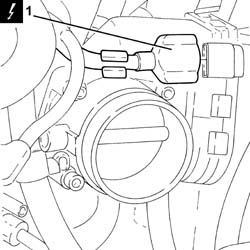
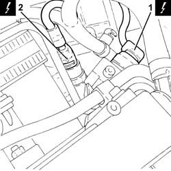
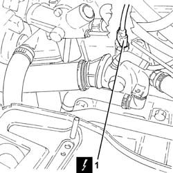
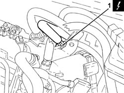
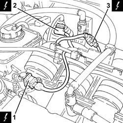
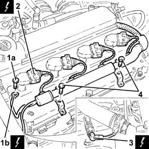
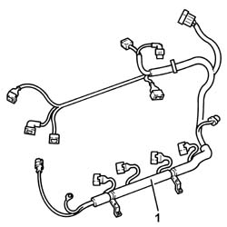

1056F94 SYSTEM CABLE LOOM on ENGINE - R.R.
- Path
- Procedures > 10 ENGINE UNIT > 1056 PETROL INJECTION SYSTEM > 1056F DIRECT PETROL INJECTION SYSTEM > 1056F94 SYSTEM CABLE LOOM on ENGINE - R.R.
- Kind
- repair procedure (removal / refitting; the operation number is the code)
- Applies to
- engines: 2.0 JTS; all production periods
- Interactive page
- https://sloeber94.github.io/elrnDB-aGt/en/#/2923170
Applies to: engines: 2.0 JTS; all production periods
 Removing
Removing
 Refitting
RefittingPosition the vehicle on the ramp
Proceed with removal - 1016A40 ignition coil cover on cylinder head- r+r
Proceed with removal - 1048A59 PIPE from flow meter to throttle casing hose - R.R.
Proceed with removal - 5530B10 battery - r+r
1. Disconnect the electrical connection from the throttle body with D.V.L. and release the wiring from the fastening.
 | Name | Connector |
|---|---|---|
1 | Throttle body actuator |

Applies to: engines: 2.0 JTS; all production periods
1. Disconnect the electrical connection from the fuel pressure regulator.
| Name | Connector |
|---|---|---|
1 | Fuel pressure regulator |
2. Disconnect the electrical connection from the fuel pressure sensor.
| Name | Connector |
|---|---|---|
2 | Fuel pressure sensor |

Applies to: engines: 2.0 JTS; all production periods
1. Disconnect the electrical connection from the engine coolant temperature sensor.
| Name | Connector |
|---|---|---|
1 | Engine temperature sender unit |

Applies to: engines: 2.0 JTS; all production periods
1. Disconnect the electrical connection of the coil wiring loom and release it from the fixing bracket.

Applies to: engines: 2.0 JTS; all production periods
1. Disconnect the electrical connection from the variable valve timing electro-magnet.
| Name | Connector |
|---|---|---|
1 | Timing variator actuator |
2. Disconnect the electrical connection from the enablement solenoid of the changeover device actuator.
| Name | Connector |
|---|---|---|
2 | Variable geometry control solenoid |
3. Disconnect the electrical connection for the cam angle sensor.
| Name | Connector |
|---|---|---|
3 | Timing sensor. |

Applies to: engines: 2.0 JTS; all production periods
1. Undo the bolt (1a) and disconnect the earth lead (1b) from the cam cover.
2. Disconnect the electrical connections from the ignition coils.
| Name | Connector |
|---|---|---|
2 | Ignition coil |
3. Disconnect the electrical connection for the air conditioning compressor electromagnet coupling.
| Name | Connector |
|---|---|---|
3 | Air conditioning compressor engagement electro-magnet |
4. Undo the bolts securing the coil wiring loom to the tappet cover.

Applies to: engines: 2.0 JTS; all production periods
1. Remove the coil wiring loom.

Applies to: engines: 2.0 JTS; all production periods
Refitting
RemovingRefit the coil wiring loom in its seating and secure it with its bolts.
Connect the electrical connection to the air conditioning compressor electromagnet coupling.
Connect the electrical connections to the ignition coils.
Connect the earth lead to the tappet cover and secure it with its bolt.
Connect the electrical connection for the cam angle sensor.
Connect the electrical connection from the enablement solenoid of the changeover device actuator.
Connect the electrical connection to the variable valve timing electro-magnet.
Connect the electrical connection for the coil wiring loom, and secure it to the mounting bracket.
Connect the electrical connection to the engine coolant temperature sensor.
Connect the electrical connection to the fuel pressure senor.
Connect the electrical connection to the fuel pressure regulator.
Connect the electrical connection to the throttle body with D.V.L. and release the electrical wiring from the band.
Proceed with refitting - 5530B10 battery - r+r .
Proceed with refitting - 1048A59 PIPE from flow meter to throttle casing hose - R.R. .
Proceed with refitting - 1016A40 ignition coil cover on cylinder head- r+r .
Remove the car from the ramps.